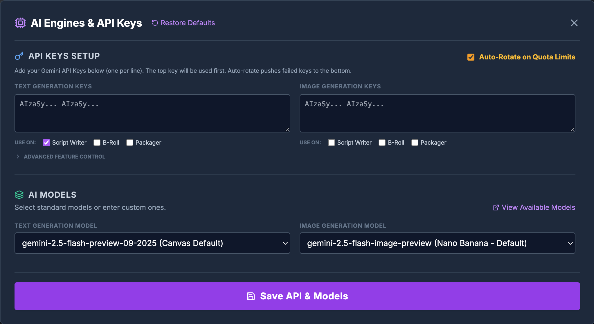
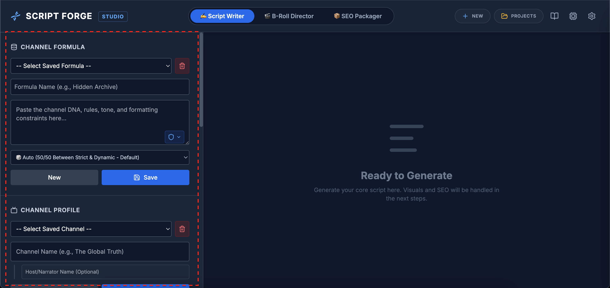
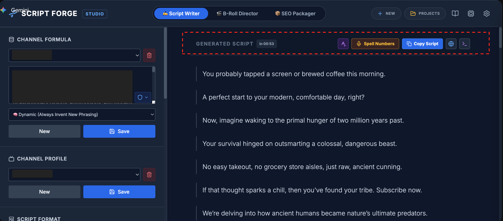
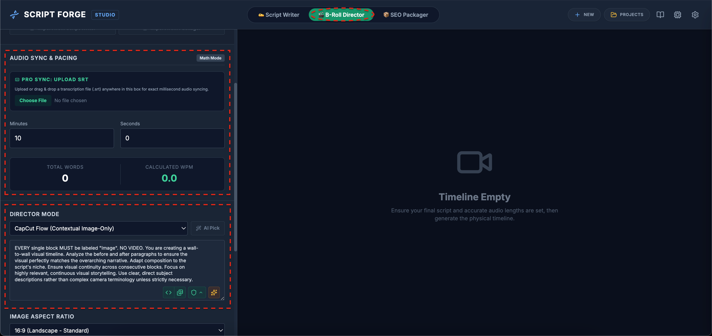

Master Script Forge
Script Forge is an elite, all-in-one AI studio designed specifically for YouTube automation. This comprehensive guide covers every button, setting, and feature to take you from a raw idea to a fully rendered video.
احترف Script Forge
ستوديو شامل بالذكاء الاصطناعي مقاد خصيصا للـ YouTube Automation. هاد الدليل كيشرح كل بطونة، كل إعداد، وكل ميزة باش تبدا من فكرة وتخرج فيديو ناضي ممنتج ومقاد للرفع.
الدليل الشامل لـ Script Forge
يعد Script Forge استوديو شامل مدعوم بالذكاء الاصطناعي لأتمتة قنوات يوتيوب. يغطي هذا الدليل كل زر وإعداد وميزة ليأخذك من الفكرة الأولية إلى فيديو كامل الإنتاج جاهز للنشر.
Maîtriser Script Forge
Script Forge est un studio IA tout-en-un conçu pour l'automatisation YouTube. Ce guide complet couvre chaque bouton, paramètre et fonctionnalité pour passer d'une idée brute à une vidéo entièrement rendue.
Step 0: Engines & API Setup
الخطوة 0: الإعدادات وليكلي API
الخطوة 0: المحركات ومفاتيح API
Étape 0 : Moteurs et Clés API
Script Forge needs an AI "Brain" (Google Gemini) to generate text and images. You have two options:
If you are using Script Forge directly inside this interactive Canvas, you do NOT need an API key! The environment injects a free API key securely behind the scenes. You can immediately start using the tool without touching any settings.
If you want to use advanced models (like Gemini 1.5 Pro) or bypass the Canvas rate limits for massive bulk-generations, click the AI Engines button in the top right header to paste your own free keys from Google AI Studio.

Advanced Fine-Tuning
Inside the settings menu ( App Settings), you can configure the engine logic:
- Cooldown Delays: Adjust the milliseconds the app waits between generation chunks to avoid "HTTP 429 Too Many Requests" errors.
- RAM Threshold: The timeline generator handles massive videos by chunking them into separate ZIP files to prevent your browser from crashing.
- System Prompts: You can literally rewrite the underlying AI behavior for every single button in the app.
Script Forge كيخصو دماغ ديال الذكاء الاصطناعي (Google Gemini). عندك جوج ديال الطرق:
يلا كنتي خدام بـ Script Forge ديريكت فـ Canvas، مغتحتاجش API Key! كاين كود فابور مدمج لداخل، تقدر تبدا الخدمة ديك الساعة بلا ما تقيس الإعدادات.
يلا بغيتي تخدم بموديلات واعرين (بحال Gemini Pro) ولا تخرج بزاف د الفيديوهات ومابغيتيش المتصفح يحبسك، كليكي على AI Engines الفوق باش تزيد الكود ديالك لي غاتجيبو من Google AI Studio فابور.
يحتاج Script Forge إلى عقل ذكاء اصطناعي (Google Gemini) لإنشاء النصوص والصور. لديك خياران:
إذا كنت تستخدم الأداة داخل هذه الـ Canvas، فأنت لا تحتاج إلى مفتاح API! يتم دمج مفتاح مجاني في الخلفية. يمكنك البدء في استخدام الأداة فورًا.
إذا كنت تريد استخدام نماذج متقدمة (مثل Gemini Pro) أو لتجنب حدود الاستخدام، انقر فوق AI Engines في الزاوية العلوية للصق مفاتيحك الخاصة من Google AI Studio.
Script Forge a besoin d'un cerveau IA (Google Gemini). Deux options s'offrent à vous :
Si vous utilisez cet outil directement dans le Canvas, vous n'avez pas besoin de clé API ! Une clé gratuite est intégrée de manière sécurisée en arrière-plan.
Pour utiliser des modèles avancés ou éviter les limites de quota lors de générations massives, cliquez sur AI Engines en haut à droite pour ajouter vos propres clés.
View 1: The Script Writer
الواجهة 1: كاتب السكريبت
الواجهة 1: كاتب السيناريو
Vue 1 : Le Rédacteur de Script
This is the heart of the storytelling engine. It converts raw ideas, articles, or transcripts into a highly structured, perfectly paced YouTube script.
1. Channel Formula & Profile
Paste your "Channel DNA" here (e.g., Tone, Perspective, Humor). The AI uses this to mimic your voice perfectly.
- The Shield : Click the shield icon in the corner to inject "Halal / Safe Narrative" constraints, forcing the AI to avoid certain themes.
- Formula Mode: Choose Strict to force the AI to use exact quotes from your formula, or Dynamic to invent brand new phrasing.
- Auto-Generator : Leave the Channel Name blank and click the sparkles to have the AI generate 10 premium names based on your formula!
2. Script Format
This dictates the physical structure of the text (e.g., short CapCut storyboard blocks vs. long paragraphs).
- Magic Formatter : Type a vague idea (e.g., "Podcast with 2 hosts") and click the sparkles to let AI write the strict rules.
- Pacing Extractor : Upload sequential screenshots of a competitor's video. The AI will analyze the math between the timestamps and write a format that perfectly clones their scene pacing!

3. Source Material
Paste your raw notes, Wikipedia articles, or rough drafts here. This is the AI's factual source of truth.
- Topic Extractor : Distills massive text blocks into a single core topic.
- Length Estimator : Analyzes your text and auto-adjusts the timeline slider to the mathematically optimal video length to maximize viewer retention without adding fluff.
4. Engines & Generation
- Web Research : Toggle this on. The AI will pause, browse Google, fact-check your notes, and append live internet data before writing!
- Standard Engine: Use for fast, short scripts (< 10 mins).
- Deep Dive (Turbo/Seq): Use for massive scripts (10 - 60 mins). The AI acts as an Architect, breaking the script into distinct sequential chapters and generating them one by one to prevent memory loss and repetition.
5. The Output & Post-Processing

- AI Polish : Click this to run the entire script through an AI Editor. It highlights grammatical fixes in purple. You can click the sparkles next to any paragraph to revert the edit.
- Number Translator : Converts digits (e.g., "$1.5M") into spoken words ("one point five million dollars") for flawless teleprompter reading.
- Regen Chapters : If a specific chapter fails due to API limits, you can surgically regenerate just that block without losing the rest of the script.
- Fact Sheet & Blueprint: View the live data scraped from Google, or copy the exact underlying prompt chains.
هاد الواجهة كتاخد الأفكار ديالك وكتحولها لسكريبت احترافي مقاد للمونطاج:
- Channel Formula: حط هنا الأسلوب ديالك. كليكي على الدرع باش الـ AI يتجنب المواضيع الممنوعة. وتقدر تكليكي على النجمات باش يقترح ليك سميات للقناة.
- Script Format: كيعزل الطريقة د الكتابة. تقدر تلوح تصاور د فيديو منافس والـ AI غيحسب الوقت بين التصاور باش ينقل الريتم (Pacing) ديالو!
- Source Material: حط المعلومات الخام. كليكي على المكانا باش الـ AI يعطيك شحال خاص يكون فالفيديو باش ميجيهش الملل.
- Web Research: يلا شعلتيها، الـ AI غيدخل لجوجل يتأكد من المعلومات ويزيد عليها قبل ما يكتب.
- Deep Dive Engine: يلا كان الفيديو طويل، هاد المحرك كيقسمو لفقرات (Chapters) وكيكتب كل وحدة بوحدها باش مايعاودش الهضرة.
- AI Polish : ملي يخرج السكريبت، كليكي عليها باش الـ AI يصحح الأخطاء اللغوية لراسو.
- ترجمة الأرقام : كترد الأرقام (1.5M) لحروف (One point five million) باش تقراهم فـ Teleprompter مرتاح.
يأخذ هذا المحرك أفكارك الأولية ويحولها إلى سيناريو يوتيوب منظم بدقة:
- صيغة القناة (Formula): ضع أسلوبك هنا. انقر على الدرع لفرض قيود المحتوى الآمن. واستخدم أيقونة لتوليد أسماء قنوات.
- تنسيق السيناريو (Format): يمكنك رفع لقطات شاشة لفيديو منافس وسيقوم الذكاء الاصطناعي بنسخ إيقاع التقطيع الخاص بهم!
- المصادر والوقت : سيحلل الذكاء الاصطناعي معلوماتك لتقدير الطول المثالي للفيديو لزيادة الاحتفاظ بالجمهور.
- البحث المعمق (Web Research): سيقوم الذكاء الاصطناعي بالبحث في جوجل في الوقت الفعلي للتحقق من الحقائق قبل الكتابة.
- التدقيق الذكي Polish: يصلح الأخطاء النحوية والتدفق بضغطة زر.
- قارئ الأرقام : يحول الأرقام إلى نصوص مكتوبة لتسهيل القراءة الصريحة.
Ce moteur convertit vos idées brutes en un script YouTube parfaitement structuré :
- Formule de Chaîne : Collez votre style. Cliquez sur le Bouclier pour des contraintes sûres. Utilisez les étincelles pour générer des noms de chaîne.
- Format du Script : Uploadez des captures d'un concurrent et l'IA clonera leur rythme de coupe !
- Recherche Web : L'IA cherchera sur Google en temps réel pour vérifier les faits avant d'écrire.
- Moteur Deep Dive : Pour les longues vidéos, l'IA écrit chapitre par chapitre pour éviter les répétitions.
- Polissage IA Polish : Corrige instantanément la grammaire et la fluidité de tout le script.
- Traducteur de Nombres : Convertit les chiffres (1.5M) en mots pour une lecture fluide au prompteur.
View 2: The B-Roll Timeline & Renderer
الواجهة 2: إخراج وإنتاج المونطاج
الواجهة 2: مخرج المقاطع وإنتاج الفيديو
Vue 2 : La Timeline B-Roll et le Rendu
Click Send to B-Roll Director from View 1. This engine reads your text and maps out the visual representation of every single sentence.
A. Setup & Pacing
Pro Sync (SRT)
Drag and drop your voiceover's .srt subtitle file here. The engine will perfectly align the visual cuts to the exact millisecond the word is spoken.
Gap Handling: Decide how the engine treats silence (e.g., Hold the previous image, or split the silence halfway).
Director Mode & Art Style
Select the directorial style (e.g., Fast TikTok vs Slow Cinematic). Select the Art Style (e.g., 90s VHS, Photorealistic).
Extraction : Upload a reference image, and the AI will extract its exact visual aesthetic so every generated clip matches it!

B. The Visual Timeline & Bulk Generation
Click Generate Timeline. The AI will output an ordered list of Image/Video prompts mapped to your audio. Check the Global Reference Lockers: if the script mentions a specific character ("Elon Musk"), upload their photo here once, and it applies to all matching scenes!
The Action Toolbar
- Start Bulk Render: Tell the Image AI (Nano Banana) to draw every single image on the timeline automatically.
- Bulk Upload: Have your own files? Name them
1.jpg,2.mp4, and upload them here. They will snap automatically into the correct blocks! - Bulk Edit: Use the checkboxes to select multiple cards. You can instantly apply Pan/Zoom motions or Animation modes to hundreds of cards at once.
C. Inline Magic Editor & MP4 Rendering
Hover over any generated image on the timeline to reveal the Inline Editor tools:
Type an instruction (e.g., "Make it rain") to instantly modify the existing image using AI Image-to-Image.
Turns a static image into a moving flipbook sequence (Morph or Stop-Motion) based on a text prompt.
Adjust the framing of an image, or set the exact start-time offset for an uploaded video file.
Final Render (MP4)
Select all your cards, set your camera motions (Pan/Zoom) and transitions (Crossfade, Slide), and click the Render button in the top toolbar.
Script Forge will stitch the entire timeline into a perfectly timed MP4 file!هاد الواجهة كتحول السكريبت ديالك لمونطاج كامل بصريا. كدير كولشي من التصاور تال الإخراج النهائي.
- Pro Sync (SRT): لوح ملف الترجمة ديال الصوت. الأداة غتحدد الوقت بالثانية ديال كل مشهد.
- Director Mode & Art Style: عزل واش بغيتي تقطيع سريع ولا سينمائي، وعزل الستيل (أنمي، واقعي). تقدر تلوح تصويرة والـ AI غينقل الستيل ديالها.
- خزائن المراجع (Lockers): يلا السكريبت كيهضر على شي شخصية، لوح تصويرتها هنا مرة وحدة، والأداة غتستعملها فكاع اللقطات لي غتبان فيهم باش تبقى ديما بحال بحال.
- Bulk Render & Upload: كليكي باش الـ AI يرسم كاع التصاور، ولا لوح تصاورك/فيديوهاتك مسميين (1.jpg, 2.mp4) وغيدخلو فبلاصتهم أوتوماتيك!
- المحرر الداخلي: دوز لا سوري فوق أي تصويرة وغيبانو ليك أدوات: Edit باش تبدلها بالـ AI، Crop باش تقطعها، و Animate باش تردها كتحرك.
- إخراج الفيديو (Render MP4): زيد حركات الكاميرا وانتقالات، وكليكي رندر باش تخرج فيديو MP4 واجد!
تحول هذه الواجهة النص إلى مونتاج مرئي كامل. إنها تقوم بكل شيء من توليد الصور إلى الإخراج النهائي.
- مزامنة SRT: أسقط ملف الترجمة الصوتية. ستقوم الأداة بمزامنة أوقات المشاهد بدقة أجزاء الثانية.
- وضع المخرج والأسلوب: حدد سرعة التقطيع والأسلوب الفني. يمكنك رفع صورة لنسخ أسلوبها!
- خزائن المراجع (Lockers): للحفاظ على تناسق الشخصيات، ارفع صورة للشخصية المعينة مرة واحدة، وسيتم استخدامها كمرجع في جميع المشاهد.
- الإنتاج والرفع الشامل: انقر ليقوم الذكاء الاصطناعي برسم جميع الصور، أو ارفع ملفاتك المسماة بالترتيب (1.jpg) لتأخذ مكانها تلقائيًا!
- المحرر الداخلي: مرر الماوس فوق أي صورة لأدوات التعديل: Edit للتعديل بالذكاء الاصطناعي، Crop للقص، و Animate لتحريك الصورة.
- تصدير الفيديو (MP4): أضف حركات الكاميرا والانتقالات، وانقر Render لتصدير فيديو MP4 جاهز!
Cette vue transforme votre script en un montage visuel complet. De la génération d'images au rendu final.
- Synchro SRT : Déposez votre fichier de sous-titres audio. L'outil synchronisera les scènes à la milliseconde près.
- Mode Réalisateur & Style : Choisissez le rythme (rapide/cinématographique) et le style. Uploadez une image pour que l'IA clone son style !
- Casiers de Référence (Lockers) : Pour la cohérence des personnages, uploadez leur photo une fois, elle s'appliquera à toutes leurs scènes !
- Rendu & Upload en Masse : Laissez l'IA dessiner toutes les images, ou uploadez vos propres fichiers renommés (1.jpg, 2.mp4) qui se placeront automatiquement !
- Éditeur Intégré : Survolez une image pour : Edit (modifier via IA), Crop (recadrer), ou Animate (animer l'image).
- Rendu MP4 : Ajoutez des mouvements de caméra et des transitions, puis exportez la vidéo MP4 finale !
View 3: The SEO Packager
الواجهة 3: تجهيز الـ SEO والتبييض
الواجهة 3: حزمة الـ SEO
Vue 3 : Le Packaging SEO
The YouTube algorithm requires perfect packaging. This view automates the psychology behind viral metadata.
Competitor Cloning (Inject)
Click the DNA Inject icon next to any section (Titles, Description, Tags). Paste a highly successful competitor's text. The AI will extract their exact structural and psychological formatting, but rewrite it populated exclusively with facts from your script.
AI Strategic Analyzer
Click the Analyze icon on the Titles or Thumbnail Hooks panel. An AI YouTube Growth Strategist will rate all generated options out of 100 based on CTR potential and curiosity gaps, telling you exactly which one to pick.
Reverse-Engineering Thumbnails
In the left panel, upload up to 3 thumbnails from competitors that went viral. The Vision AI will perform a "Compositional Skeleton Transfer":
- It analyzes the layout, lighting, and dynamic elements of the competitor's thumbnail.
- It swaps out the competitor's subjects and replaces them with the specific subjects from your script.
- It outputs a highly detailed prompt you can immediately render to get a structurally identical, but topically relevant thumbnail!
خوارزمية يوتيوب كتبغي تغليف مثالي. هاد الواجهة كتقاد ليك الـ SEO بذكاء.
- استنساخ المنافسين : كليكي على أيقونة الـ DNA فالعناوين ولا الوصف. حط ديال شي منافس ناجح، والـ AI غينقل التخطيط السيكولوجي ديالو ولكن بالمعلومات د الفيديو ديالك فقط.
- التحليل الاستراتيجي : كليكي على المبيان باش الـ AI ينقط العناوين ديالك على 100 ويقول ليك شكون فيهم لي غيجيب كليكات كتر.
- عكس الصور المصغرة: لوح تصاور مصغرة ناجحة فـ اليسر. الـ AI غياخد الهيكل ديالها (Skeleton) ويكتب ليك أوامر باش تصاوب بحالها ولكن بالمواضيع د الفيديو ديالك.
تتطلب خوارزمية يوتيوب تغليفًا مثاليًا. تقوم هذه الواجهة بأتمتة سيكولوجية الـ SEO.
- استنساخ المنافسين : انقر على أيقونة الـ DNA. الصق نص منافس ناجح، وسيقوم الذكاء الاصطناعي بنسخ تخطيطه النفسي وإعادة كتابته بمعلومات فيديوك فقط.
- التحليل الاستراتيجي : انقر على المخطط ليقوم الذكاء الاصطناعي بتقييم عناوينك من 100 واختيار الأفضل لجلب النقرات (CTR).
- الهندسة العكسية للصور المصغرة: ارفع صور مصغرة ناجحة لمنافسين. سيستخرج الذكاء الاصطناعي هيكلها وتكوينها، وينشئ أوامر لتوليد صور مشابهة تناسب موضوعك!
L'algorithme YouTube nécessite un packaging parfait. Cette vue automatise la psychologie du SEO.
- Clonage de Concurrents : Cliquez sur l'icône ADN. Collez le texte d'un concurrent viral, et l'IA copiera sa structure psychologique avec les faits de votre vidéo.
- Analyseur Stratégique : L'IA notera vos titres sur 100 et choisira le meilleur pour maximiser le taux de clic (CTR).
- Rétro-ingénierie de Miniatures : Importez des miniatures concurrentes réussies. L'IA extraira leur structure et générera des prompts pour créer des images similaires adaptées à votre sujet !
Cloud Storage & Workspaces
المشاريع والتخزين
إدارة المشاريع والتخزين السحابي
Projets et Stockage
Click the Projects button at the top to save your workspace. Script Forge auto-saves as you type! A green dot on the folder icon means everything is safely stored in your browser's IndexedDB (or Firebase if enabled).
To back up your data, click the Export All button in the Projects Manager. This downloads a highly compressed JSON file containing your entire workspace, history, and generated assets, which you can import back into any other browser.
كليكي على زر Projects الفوق باش تسجل الخدمة ديالك. Script Forge كيسجل أوتوماتيك ملي كتكون كتكتب! نقطة خضرا كتعني راه كلشي مسجل بأمان.
باش دير نسخة احتياطية للخدمة، كليكي على Export All باش تتيليشارجي ملف JSON فيه كاع الخدمة ديالك تقدر تلوحو فمتصفح أخر.
انقر على زر Projects لحفظ مساحة عملك. يقوم Script Forge بالحفظ التلقائي أثناء الكتابة! نقطة خضراء تعني أن كل شيء محفوظ بأمان.
لعمل نسخة احتياطية، انقر على Export All لتنزيل ملف JSON مضغوط يحتوي على عملك بالكامل لرفعه في أي متصفح آخر.
Cliquez sur le bouton Projects pour sauvegarder votre espace. Script Forge sauvegarde automatiquement pendant que vous tapez ! Un point vert signifie que tout est sécurisé.
Pour sauvegarder vos données, cliquez sur Export All pour télécharger un fichier JSON contenant tout votre travail, importable sur n'importe quel autre navigateur.